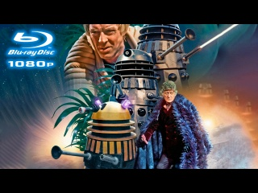
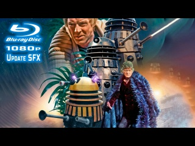

Субтитры: Русские и Английские |  |
|---|---|
с обновленными спецэффектами Субтитры: Русские и Английские |  |
с обновлением визуальных эффектов (cunningmunki) Субтитры: отсутствуют |
| Все эпизоды (кроме 3-го) сохранились в цвете (видеокассета PAL 2") 3-й эпизод сохранился в ч/б * Цвет восстановлен (окрашивание пленки + восстановление цвета по хроматографическим точкам) |
|---|
|
Прямое продолжение «Границы в космосе»: раненый Доктор отправляет Джо на разведку, а сам впадает в кому. Джо оказывается на планете Спиродон — джунглевой, вулканической планете, где далеки тайно собирают армию из десятков тысяч бойцов для захвата галактики. На помощь приходит отряд талов — тех самых, что когда-то сражались с далеками вместе с Первым Доктором. Серия отдаёт дань первоисточнику: Скодаро, талы, расследование далековской базы — рифмы на «Далеков» 1963 года, только в масштабах эпической шестисерийной истории.
VHS - ноябрь 1999 |   DVD+Boxset - 5 октября 2009 |
|---|---|
 Blu-ray (обновленный сезон) - 8 июля 2019 * Версия в нашей группе | Blu-ray (сборник историй) - 9 ноября 2020 |